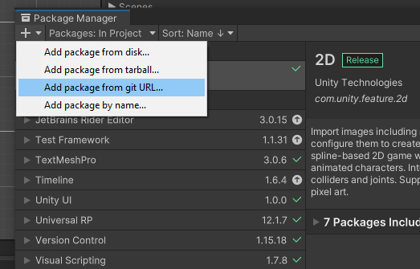
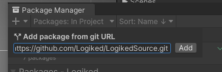

Downloads
Procédure
Les packages Logiked sont importables directement depuis le package manager Unity, via l'option "Add from git URL"

Il vous suffit ensuite de copier l'addresse du package que vous souhaitez installer :

Liens
Acuellement les packages doivent être ajoutés 1 par 1 depuis le package manager.
Packages nescessaires
| Package | Repository | Disponibilité | Description | Dépendances |
|---|---|---|---|---|
| Logiked Source |
https://github.com/Logiked/LogikedSource.git
|
❌ |
Package de base Logiked. Ensemble d'outils et de méthodes d'extensions. |
Packages Optionnels
| Package | Repository | Disponibilité | Description | Dépendances |
|---|---|---|---|---|
| Logiked 2D Tools | https://github.com/Logiked/Logiked2DTools.git | ❌ | Système de découpe de sprite et d'animation 2D en Framsheet haute performance. | LogikedSource |
| Logiked Languages | https://github.com/Logiked/LogikedLanguage.git | ❌ | Support de patch de traductions pour concevoir facilement un projet multilangue. | LogikedSource |
| Logiked Audio System | unvaliable | ❌ | Classes & fonctions simplifiant la lecture de son sur Unity. Sons aléatoires & variation du pitch pour des ambiances naturelles. | LogikedSource |
| Logiked Mesh Terrain Generation System | unvaliable | ❌ | LogikedSource | |
| Logiked Path Terrain Generation System | unvaliable | ❌ | LogikedSource |